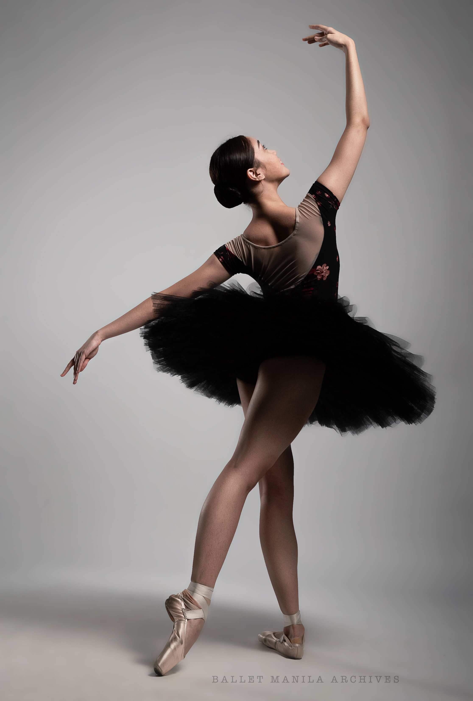

Dance your problems away!
What is dance?
Dance is a form of creative expression that involves moving the body in rhythm to musical accompaniment. Dancers might communicate emotion through dance or use dance to enjoy the experience of being in a physical body. However, not all forms of movement are dance; in order to meet the dance definition, a movement needs expressiveness rather than just functionality.
Ballet!
Ballet (French: [balɛ]) is a type of performance dance that originated during the Italian Renaissance in the fifteenth century and later developed into a concert dance form in France and Russia. It has since become a widespread and highly technical form of dance with its own vocabulary. Ballet has been influential globally and has defined the foundational techniques which are used in many other dance genres and cultures. Various schools around the world have incorporated their own cultures. As a result, ballet has evolved in distinct ways.
Contemporary!

Contemporary dance[1] is a genre of dance performance that developed during the mid-twentieth century and has since grown to become one of the dominant genres for formally trained dancers throughout the world, with particularly strong popularity in the U.S. and Europe. Although originally informed by and borrowing from classical, modern, and jazz styles, it has come to incorporate elements from many styles of dance.[2] Due to its technical similarities, it is often perceived to be closely related to modern dance, ballet, and other classical concert dance styles.
Hip Hop!

Hip hop dance is a range of street dance styles primarily performed to hip hop music or that have evolved as part of hip hop culture. It is influenced by a wide range of styles that were created in the 1970s and made popular by dance crews in the United States. The television show Soul Train and the 1980s films Breakin', Beat Street, and Wild Style showcased these crews and dance styles in their early stages; therefore, giving hip-hop dance mainstream exposure.
Latin!

Latin dance is a general label, and a term in partner dance competition jargon. It refers to types of ballroom dance and folk dance that mainly originated in Latin America. The category of Latin dances in the international dancesport competitions consists of the cha-cha-cha, rumba, samba, paso doble. (Jive has Irish origin). Social Latin dances (Street Latin) include salsa, mambo, merengue, rumba, bachata, bomba and plena. There are many dances which were popular in the first part of the 20th century, but which are now of only historical interest. The Cuban danzón is a good example.
Break dance!

Breaking, also called b-boying, b-girling or breakdancing, is a style of street dance originating in the Bronx by African American and Puerto Rican communities in New York City, United States. While diverse in the amount of variation available in the dance, breakdancing mainly consists of four kinds of movement: toprock, downrock, power moves and freezes. Breakdancing is typically set to songs containing drum breaks, especially in funk, soul music and hip-hop music, although modern trends allow for much wider varieties of music along certain ranges of tempo and beat patterns.